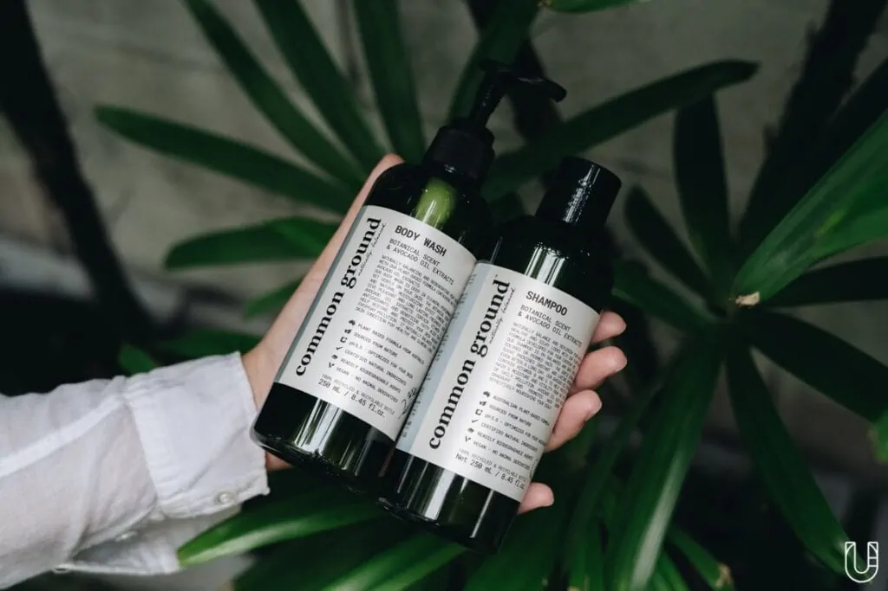

มีเรื่องตลกเล่าให้ฟังตั้งแต่เช้าวันหยุด เมื่อแม่แซวเราหลังออกจากห้องน้ำทันทีว่าวันนี้ร้องเพลงเสียงดังเชียว อารมณ์ดีมาจากไหน ! ก็จะไม่ให้รู้สึกดีได้อย่างไร ในเมื่อน้ำที่ใช้ในการล้างมือ อาบน้ำ หรือซักผ้า สามารถนำไปพักแล้วเก็บมารดน้ำต้นไม้ ล้างรถ ล้างสุขภัณฑ์ โดยไม่ต้องเปลืองน้ำใหม่ ปลอดภัยกับท่อระบายน้ำในเมือง แถมส่วนผสมในผลิตภัณฑ์ดังกล่าวยังสามารถย่อยสลายได้เองตามธรรมชาติอีกด้วย
เปิดคอนเสิร์ตในบ้านให้สบายใจและชวนเปิดฝาผลิตภัณฑ์แนวคิดดีจาก ‘Organics Buddy’ ธุรกิจรักษ์โลกและรักคน ของ 2 เพื่อนซี้ เค-ชโยธร ทรงธีระปัญญา และ ตั้ม-ธนทัต สุกาญจนพงษ์ ที่ตั้งใจให้คนไทยเข้าถึงสินค้าออร์แกนิกในราคาเอื้อมถึงผ่าน 2 แบรนด์ภายใต้ธุรกิจอย่าง Common Ground ผลิตภัณฑ์ดูแลเส้นผมจรดปลายเท้าที่นำขวดพลาสติกทิ้งแล้วมารีไซเคิลเป็นบรรจุภัณฑ์ และ Soganics ผลิตภัณฑ์ดูแลบ้านที่เปลี่ยนน้ำยาล้างจาน น้ำยาซักผ้า หรือน้ำยาถูพื้นที่เป็นมิตรต่อเด็ก สัตว์เลี้ยง และเครื่องใช้ ให้มีบรรจุภัณฑ์เป็นเฟอร์นิเจอร์สุดมินิมอล
คนแพ้ง่ายไม่พ่ายเรื่องรักษ์โลก
“คนในทีมเราคนหนึ่งชอบดำน้ำมาก พอไปบ่อยๆ เลยรู้ว่าสภาพปะการังและความใสของน้ำทะเลเปลี่ยนไปทุกครั้ง จากดีเป็นร้าย จากร้ายเป็นร้ายกว่า ในฐานะคนรุ่นใหม่ที่เห็นว่าสิ่งแวดล้อมแย่ลงต่อหน้า จึงอยากสร้างสิ่งเล็กๆ ที่ช่วยโลกได้” ‘เค’ ขยับแว่นสายตาและพับชายแขนเชิ้ตขาวของเขาแล้วบอกเราถึงปัญหาแหล่งน้ำที่ทีมงาน Organics Buddy เจอ ก่อนที่ ‘ตั้ม’ เพื่อนสนิทร่วมอุดมการณ์ของเคจะประสมโรงเสริมว่ากว่าจะสร้าง 2 แบรนด์ภายใต้ธุรกิจนี้ขึ้นมาได้ สิ่งสำคัญอยู่ที่การสอบถามปัญหาของผู้บริโภคและคอยเป็นหูเป็นตา ช่วยกันตระหนักถึงผลเสียต่อธรรมชาติให้เกิดน้อยที่สุด
ก่อนเคและตั้ม 2 หนุ่มที่สนิทกันมาตั้งแต่มัธยมฯ จะมองเห็นภาพใหญ่ในการช่วยเหลือสิ่งแวดล้อม Organics Buddy เริ่มต้นจากปัญหาใกล้ตัวของทั้งคู่ที่เป็นคนผิวแพ้ง่าย ใช้อะไรก็เกิดผื่นแดง ครั้งหนึ่งตั้มเคยไปพบหมอผิวหนังเพราะแพ้สารตกค้างบนเสื้อผ้า หมอจึงแนะนำให้ตั้มใช้น้ำยาซักผ้าที่อ่อนโยนและมีส่วนผสมจากธรรมชาติ ทว่าแบรนด์ออร์แกนิกหลายๆ แบรนด์ที่มีขายในไทยกลับมีราคาสูง ไม่เอื้อต่อการซื้อใช้ในระยะยาว ทั้งคู่เลยพูดเล่นๆ กันว่า “แล้วทำไมไม่ทำใช้เองเลยล่ะ”
ประโยคที่พูดเล่นๆ กลายเป็นเรื่องไม่เล่น เมื่อตั้มตัดสินใจไปเรียนปริญญาโทด้านบริหารธุรกิจที่ประเทศออสเตรเลีย แล้วพบว่าสินค้าออร์แกนิกที่นั่นเติบโตในวงกว้าง มีตัวเลือกให้หยิบจับมากมาย ราคาไม่แพง ที่สำคัญคุณภาพสินค้าและโปรดักต์ภายนอกดึงดูดใจให้อยากใช้ไปนานๆ จนตั้มตอบตัวเองได้เลยว่า ‘ของดีๆ ไม่จำเป็นต้องแพงเสมอ’
ตั้มต่อสายตรงไปยังเคและถกเถียงกันว่าผลิตภัณฑ์ที่ไทยยังไม่ค่อยมีแบรนด์ไหนตอบโจทย์ ทั้งเรื่องคุณสมบัติที่ช่วยชะล้างคราบสกปรกไปพร้อมๆ กับราคาสบายกระเป๋าที่เหมาะกับการซื้ออย่างสม่ำเสมอ แค่นั้นยังไม่พอ เพราะการที่ได้ใช้ชีวิตอยู่ในออสเตรเลีย ทำให้เขาเห็นความสำคัญต่อการใช้ระบบน้ำหมุนเวียนในบ้าน หรือ Greywater system ที่สามารถนำน้ำที่ใช้ในครัวเรือนมาพักเก็บไว้รดน้ำต้นไม้ต่อได้ เพราะไม่มีการปนเปื้อนจากสารเคมี (ก็ผลิตภัณฑ์บ้านเขาแสนจะออร์แกนิกนี่หน่า) ตั้มและเคจึงเล็งเห็นแนวคิดเป็นมิตรต่อสิ่งแวดล้อมที่อยากเอามาปรับใช้กับปัญหาแหล่งน้ำในไทยทั้งน้ำเสียในคลองและระบบนิเวศทางทะเล ที่สำคัญไม่ลืมสรรพคุณที่ห่วงใยผู้ใช้ได้อย่างยั่งยืนด้วยการส่งแบบสอบถามไปถึงผู้บริโภคทั่วทิศทั้งคนใกล้ตัวและคนไกลตัวว่า อะไรบ้างที่ผู้บริโภคต้องการจากผลิตภัณฑ์ดูแลร่างกายและผลิตภัณฑ์ดูแลบ้าน 1 ขวด และเอาความเห็นตรงนั้นมาพัฒนาให้ตรงใจผู้บริโภคที่สุด !
Common Ground ดูแลคนตอนใช้ ดูแลธรรมชาติตอนทิ้ง
28 วัน คือระยะเวลาที่ส่วนผสมในบรรจุภัณฑ์เจลล้างมือ เจลอาบน้ำ โลชัน แชมพู หรือครีมนวดผม ของ Common Ground สามารถย่อยสลายได้เองตามธรรมชาติผ่านแสงแดดและการทำงานของจุลินทรีย์ 100 % คือการนำขวดน้ำพลาสติกรีไซเคิลจากโรงงานขยะมาทำความสะอาดด้วยหลักเกณฑ์ที่ได้มาตรฐาน บดละเอียด และผลิตเป็นเรซิ่นเพื่อชุบชีวิตขวดพลาสติกให้เป็นบรรจุภัณฑ์ และ 120-260 บาท คือราคาของผลิตภัณฑ์ทั้งหมดที่เคและตั้มอยากให้ทุกคนเข้าถึงสินค้าจากธรรมชาติโดยไม่เหนือหนักกว่าแรง
นี่คือสิ่งที่เราอยากพรีเซนต์ให้ทุกคนได้อ่านเป็นอย่างแรกๆ เพราะเคและตั้มเป็นผู้ผลิตเจ้าแรกในไทยที่ใช้ขวดพลาสติกรีไซเคิลมาดีไซน์ให้สวยตามแบบฉบับสายมินิมอลด้วยสีเขียวโทนธรรมชาติ มองแล้วสดชื่นเมื่อเปียกน้ำ และตกแต่งฉลากโดยรอบด้วยฟอนต์และคู่สีที่น้อยแต่มาก เรียบแต่โก้ ที่ทำให้เราไม่แปลกใจเลยว่า ‘เค’ คนออกแบบจะเป็นสถาปนิกมาก่อน ภายนอกดีอย่างเดียวไม่พอ แต่ภายในก็ดีไม่แพ้กันเพราะส่วนผสมหลักของทุกผลิตภัณฑ์เป็น Plant-based เน้นพืชคุณภาพจากออสเตรเลีย โดยมีน้ำมันอโวคาโดที่มีวิตามิน B และ วิตามิน E เป็นตัวชูโรงปกป้องบำรุงผิวและเส้นผมจากมลภาวะระหว่างวัน

เคและตั้มเล่าว่าพวกเขาเริ่มจากคติ ‘อยากรู้ก็ต้องถาม’ ที่ใช้ในการพัฒนาสูตรผลิตภัณฑ์ ด้วยการสร้างแบบสอบถามขึ้นมาให้คนรอบข้างตอบและช่วยส่งต่อให้คนที่อยากแนะนำไปเรื่อยๆ ว่าส่วนใหญ่ผู้บริโภคเจอปัญหาอะไรบ้างเกี่ยวกับผลิตภัณฑ์ทำความสะอาดร่างกายและมีพฤติกรรมการใช้อย่างไร จนได้ข้อสรุปว่าชาวแพ้ง่ายทั้งหลายมักเผชิญอาการผื่นขึ้นในสบู่อาบน้ำ คันหนังศีรษะหรือแสบมากเมื่อใช้แชมพู หรือการล้างมือด้วยสบู่บ่อยๆ ก็ทำให้มือแห้งแตกเป็นขุย โดยหลายๆ คนมักตัดสินใจซื้อโปรดักต์ 1 ขวดจากรูป (โปรดักต์ที่ดึงดูด) ลักษณ์ (มีฟองแล้วอุ่นใจ รู้สึกว่าสะอาด) กลิ่น (หอมอ่อนๆ ก็ยังดี) และราคาเป็นมิตรก็สำคัญไม่แพ้ข้ออื่น จึงเป็นโจทย์ที่เคและตั้มต้องบาลานซ์ความออร์แกนิกให้เข้ากับสิ่งที่ผู้บริโภคต้องการ และทดลองสูตรในแล็บส่วนตัวที่ออสเตรเลีย ก่อนส่งกลับไทยมาให้ผู้บริโภครอบข้างลองใช้
“ตอนรีเสิร์ชสูตรเจลล้างมือ เราไปดูว่าปกติคนส่วนใหญ่ใช้เวลาล้างมือนานเท่าไหร่ มีฟองในอ่างเยอะไหม ซึ่งพบว่าส่วนใหญ่มีฟองเต็มอ่างกันทั้งนั้น ทำให้เปลืองน้ำเวลาราดกลบฟอง ฉะนั้นเจลล้างมือของพวกเราจึงสามารถล้างได้ทั้งวันโดยที่มือยังนุ่ม ฟองในน้ำน้อย และช่วยประหยัดค่าน้ำให้ลูกค้าไปได้อีกแรง
ไม่เพียงแต่การปรับสูตรให้ถูกใจผู้บริโภคอย่างเดียว แต่ยังถูกใจธรรมชาติได้อย่างไม่น่าเชื่อ เพราะ 100 % ของน้ำทั้งหมดที่ใช้จากผลิตภัณฑ์ทุกชิ้นของ Common Ground หากเข้าระบบบำบัดน้ำเสียจะกลายเป็นน้ำทิ้งที่มีคุณภาพ ไร้กลิ่นเหม็น พร้อมปล่อยสู่เเหล่งน้ำได้อย่างปลอดภัย เเละยังสามารถนำน้ำไปรดต้นไม้หรือล้างรถได้ เพราะส่วนผสมทั้งหมดของผลิตภัณฑ์นั้นไร้สารเคมีอันตรายตามแบบฉบับของ Greywater system นั่นเอง
“ที่ออสเตรเลีย ภาครัฐฯ ให้ความสำคัญกับเกษตรกร สินค้าออร์แกนิก และการบำบัดน้ำเสียมาก ทำให้การจะใช้สินค้าหรือมีวิถีแบบออร์แกนิกเป็นเรื่องปกติ แต่ที่ไทยยังขาดความตระหนักคิดในเรื่องของสิ่งแวดล้อม ภาครัฐฯ ลงมือจัดการแค่บางเรื่องที่เป็นกระแสเท่านั้น
“พวกเราเชื่อในประโยคที่ว่าการกระทำของมนุษย์ส่งผลต่อธรรมชาติเสมอ จึงอยากชวนให้ทุกคนมองสิ่งแวดล้อมเป็นเหมือนคู่หูที่ช่วยดูแลกันและกันตลอดไป”